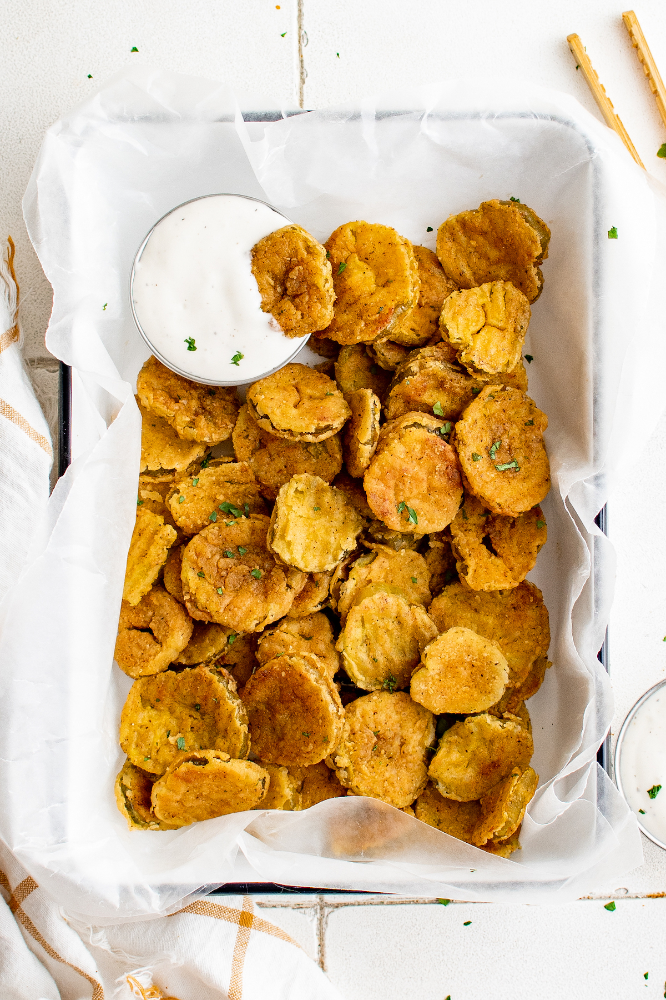

NashVille Hot Fried Pickles

Description
Try these NashVille hot fried picklesfor a new way to enjoy fried pickles.
They are bursting with salty and spicy flavor with a hint of sweet from the
brown sugar.
Ingredients
- 2 cups buttermilk
- 2 large eggs
- 1 tablespoon hot sauce
- 1 cup all purpose flour
- 1 cup whole wheat flour
- 2 teaspoons paprika
- 2 tablespoons cayenne pepper
- 4 cups vegetable oil for frying
- 1 stick butter
- 1 teaspoon garlic powder
- 1 teaspoon kosher salt
- 1 tablesppon brown sugar
- 1 jar crunchy dill pickle spears
Steps
- Whisk together buttermilk, eggs, and hot sauce in a shallow dish. Whisk together flours, 1 teaspoon paprika, and 1 teaspoon cayenne in a separate shallow dish.
- Heat oil in a large saucepan to 375 degrees F (190 degrees C).
- Melt butter in a small saucepan over medium heat. Remove from heat and stir in brown sugar, salt, garlic powder, and remaining 1 teaspoon paprika and 1 teaspoon cayenne pepper. If mixture clumps or separates, just return to heat on low for 30 seconds and stir.
- Drain pickles and pat well dry with paper towels. Lightly coat the pickle with the flour mixture then coat lightly with the buttermilk mixture, allowing excess to drip off. Coat in flour mixture again and set aside. Repeat with remaining pickle spears.
- Working in batches of 2 to 3 pickles at a time, fry each pickle, flipping occasionally, until they are crispy and golden brown, 2 to 3 minutes. Drain on paper towels. Brush butter mixture over pickles and serve.